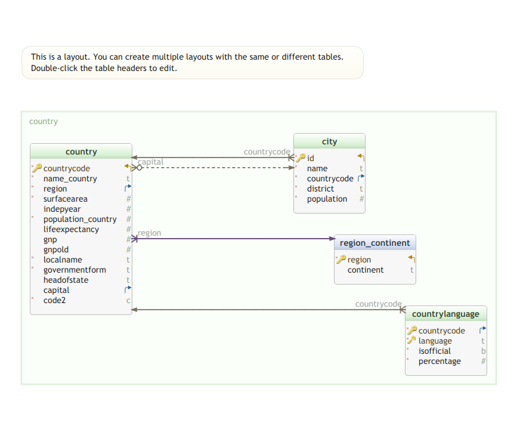

erDiagram
COUNTRY ||..o{ CITY : contains
COUNTRY {
string(3) countrycode PK
string name_country
numeric population_country
integer capital FK
}
CITY {
integer id PK
string(3) countrycode FK
string name
numeric population
}
CITY |o..o| COUNTRY : is-capital
Modélisation II :
Traduction des modèles ER: Pattes de corbeaux, Relationnel
Équipe BD
2025-11-14
Introduction
Entre modèle EA et modèle relationnel
Dans le modèle EA
- Plusieurs types de briques de bases : Entités (noms) et Associations (verbes)
- Pas a priori de moyen de représenter les schémas EA dans le formatlisme EA
- Un formalisme accessible (en principe) aux usagers du système d’information
Dans le modèles relationnel
- Une seule brique de base : les tables
- Un schéma est décrit par des tuples insérés dans les tables de la métabase
Modèle pattes de corbeaux
Objectifs
Une technique de traduction du formalisme EA vers le formalisme relationnel
Traduction des associations selon l’arité et les cardinalités
Visualisation des contraintes référentielles via les pattes de corbeaux
Un formalisme graphique très proche du modèle relationnel
Un formalisme graphique utilisé en rétro-ingénierie
Un formalisme graphique utilisé pour documenter les bases de données relationnelles
Origines
Créé par Gordon Everest (fin des années 1970)
Normalisé par Finkelstein et Martin
Diagrammes
Deux briques de base
Les diagrammes en pattes de corbeau sont formés de tables et de liens entre tables.
Les tables
représentent :
- des entités fortes
- des entités faibles issues de la traduction d’associations \(n\)-aires et/ou d’associations plusieurs-vers-plusieurs
Les liens
représentent des associations binaires un-un, ou un-vers-plusieurs
Les cardinalités sont visualisées par les extrémités des liens
Les cardinalités
| Symbole (gauche) | Symbole (droite) | Interprétation |
|---|---|---|
|o
|
o|
|
Zero ou un |
||
|
||
|
Exactement un |
}o
|
o{
|
Zero ou plus (pas de borne supérieure) |
}|
|
|{
|
un ou plus (pas de borne supérieure) |
Aliases
| Symbole (gauche) | Symbole (droite) | Alias for |
|---|---|---|
| un or zero | un or zero | Zero ou un |
| zero ou un | zero ou un | Zero ou un |
| un ou plus | un ou plus | un ou plus |
| un or plusieurs | un or plusieurs | un ou plus |
| plusieurs(1) | plusieurs(1) | un ou plus |
| 1+ | 1+ | un ou plus |
| zero ou plus | zero ou plus | Zero ou plus |
| zero or plusieurs | zero or plusieurs | Zero ou plus |
| plusieurs(0) | plusieurs(0) | Zero ou plus |
| 0+ | 0+ | Zero ou plus |
| only un | only un | Exactement un |
| 1 | 1 | Exactement un |
Liens non-identifiants : exemples
Une instance de
COUNTRYcontient entre \(0\) et un nombre non borné d’instances deCITY(patte de corbeau côtéCITY)Une instance de
CITYest toujours située sur une et une seule instance deCOUNTRYUne instance de
CITYest la capitale de \(0\) ou \(1\) intance deCOUNTRYUne instance de
COUNTRYpossède \(0\) ou \(1\) capitale
Visualisation redondante
En affichant un lien et en précisant qu’une attribut est une clé étrangère, nous répétons deux fois/soulignons l’information de contrainte référentielle
Liens identifiants
Note
Un lien est identifiant si la clé primaire de l’émetteur contient une référence à la clé primaire de la table destinataire.
- Exemple
-
Dans le schéma
worldle lien entrecountrylanguageetcountryest identifiant : la clé primaire decountrylanguageest formée par(countrycode, language). L’attributcountrycodedecountrylanguagefait référence à l’attributcountrycodedecountry(clé primaire decountry)
erDiagram
COUNTRY ||--|{ COUNTRYLANGUAGE : speaks
COUNTRY {
string countrycode
string name_country
numeric population_country
}
COUNTRYLANGUAGE {
string countrycode
string language
boolean isofficial
numeric percentage
}
Les pattes de corbeau comme variante du modèle Entité-Association ?
Remarque
La notation en pattes de corbeau est parfois/souvent présentée comme un variante de la modélisation Entité-Association (de Chen)
C’est le cas dans l’outil de dessin mermaid
Objection I :
Un lien en notation pattes de corbeau définit une relation entre deux tables. Un lien en pattes de corbeau ne peut pas représenter directement un association d’arité supérieure à 2
Objection II :
Un lien en notation pattes de corbeau ne porte pas d’attributs propres
Convention
Dans ce cours, la notation en pattes de corbeau est utilisée pour visualiser le modèle relationnel. Les liens permettent de souligner/visualiser les contraintes référentielles
Traduction d’une association binaire plusieurs-un en pattes de corbeau
Exemple association binaire plusieurs-un dans schéma world
Traduction
erDiagram
COUNTRY ||..o{ CITY : contains
COUNTRY {
string(3) iso3 PK
string name_country
numeric population_country
string governmentForm
string headOfState
}
CITY {
integer id PK
string(3) iso3 FK
string name
numeric population
}
Un lien non-identifiant depuis la table représentant l’entité de cardinalité \(0:1\) (CITY) vers la table représentant la cardinalité \(0:n\) (COUNTRY)
Les éventuels attributs propres de l’association sont représentés par des attributs de la table représentant l’entité de cardinalité \(0:1\)
Mise en garde
La patte de corbeau 0{ est placée du côté de la table représentant l’entité de cardinalité \(0:1\) (CITY)
Traduction d’une association binaire plusieurs-plusieurs en pattes de corbeau
Une association plusieurs-plusieurs
Transformation préalable à l’aide d’une entité faible
Traduction
erDiagram
COUNTRY ||--o{ COUNTRYLANGUAGE : speaks
COUNTRY {
string(3) iso3 PK
string name_country
numeric population_country
string governmentForm
string headOfState
}
LANGUAGE ||--o{ COUNTRYLANGUAGE : is-spoken
LANGUAGE {
string(3) iso PK
string name
}
COUNTRYLANGUAGE {
string(3) iso PK, FK
string(3) iso3 PK, FK
boolean isofficial
numeric percentage
}
La table obtenue par traduction de l’entité faible est appelée table intermédiaire
La table intermédiaire COUNTRYLANGUAGE comporte les attributs propres (percentage, isofficial) de l’association originelle (qui sont aussi ceux de l’entité faible)
Les deux associations faibles issues de l’entité faible sont traduites en liens identifiants entre l’entité intermédiaire et les tables traduisant les entités (ici COUNTRY et LANGUAGE)
Liens identifiants
Les liens identifiants correspondent à des contraintes référentielles (comme les liens non-identifiants).
Les liens identifiants témoignent du fait que les constituants de la clé primaire de la table intermédiaire (ici iso3 et isol) font référence aux clés primaires des tables COUNTRY (iso3) et LANGUAGE (isol).
Table intermédiaire
Caractérisation
Les tables intermédiaires sont caractérisées par le fait que certaines composantes de leur clé primaire sont la source de contraintes référentielles vers la clé primaire d’une autre table.
Usages
- traduction des associations plusieurs-plusieurs
- traduction des associations d’arité supérieure ou égale à 3
- traduction des entités faibles
- traduction des spécialisations
Traduction d’une association \(n\)-aire (\(n>2\))
Exemple de l’association flight
Transformation de l’association quarternaire en quatre associations binaires (faibles)
L’association quarternaire est transformée en
- une entité faible. Chaque instance de cette entité faible représente une instance de l’association quaternaire
- quatre associations binaires faibles. Une instance de l’association binaire faible relie une instance de l’entité faible (association quaternaire) à l’instance de entité participante concernée
Entre l’entité faible et une association faible, la cardinalité est toujours 1:1
Traduction en pattes de corbeau
erDiagram
AIRPORT ||--o{ FLIGHT : takes-off
AIRPORT ||--o{ FLIGHT : lands-at
AIRLINE ||--o{ FLIGHT : operates
PLANE ||--o{ FLIGHT : uses
AIRPORT {
string(3) faa PK
string name
numeric lat
numeric lon
}
AIRLINE {
string(3) faa PK
string name
}
PLANE {
string(3) tailnum PK
string model
string manufacturer
int year
}
FLIGHT {
string(3) origin PK, FK
string(3) dest PK, FK
string tailnum PK, FK
string carrier PK, FK
int num PK
datetime dep_time PK
}
- Une fois la transformation de l’association quaternaire en une entité faible et quatre associations binaires un-plusieurs, la traduction ressemble à la traduction des associations binaires un-plusieurs
- L’entité faible est traduite en une table intermédiaire
- Les associations faibles sont traduites en liens identifiants
Des pattes de corbeaux au relationnel
Un traduction immédiate
Chaque table du modèle en pattes de corbeau correspond à une table/relation du modèle relationnel.
Les liens du modèle en pattes de corbeau se traduisent en contraintes référentielles
La proximité entre le modèle relationnel et les diagrammes en pattes de corbeau ouvrent la voie à la rétro-ingénierie
Du relationnel aux pattes de corbeau
Rétro-ingénierie (reverse engineering)
L’ingénierie directe est normalement le processus de création d’un nouveau système (d’information) à partir de rien.
La rétro-ingénierie est le processus d’analyse d’un système existant pour comprendre sa conception et ses usages.
Un SGBD mémorise la définition des schémas comme world dans un schéma particulier la métabase (information_schema + pg_catalog)
La rétro-ingénierie consiste à construire un diagramme en pattes de corbeau à partir des données de la métabase
De nombreux outils (plus ou moins payants) sont disponibles
Schéma world
schema world
LDD CREATE SCHEMA IF NOT EXISTS world;
CREATE TABLE world.region_continent (
region text NOT NULL ,
continent text ,
CONSTRAINT pk_region_continent PRIMARY KEY ( region )
);
CREATE TABLE world.city (
id integer NOT NULL ,
name text NOT NULL ,
countrycode char(3) NOT NULL ,
district text ,
population integer ,
CONSTRAINT city_pkey PRIMARY KEY ( id )
);Créations de tables (suite)
CREATE TABLE world.country (
countrycode char(3) NOT NULL ,
name_country text NOT NULL ,
region text ,
surfacearea real ,
indepyear smallint ,
population_country integer ,
lifeexpectancy real ,
gnp numeric(10,2) ,
gnpold numeric(10,2) ,
localname text NOT NULL ,
governmentform text NOT NULL ,
headofstate text ,
capital integer ,
code2 char(2) NOT NULL ,
CONSTRAINT country_pkey PRIMARY KEY ( countrycode )
);
CREATE TABLE world.countrylanguage (
countrycode char(3) NOT NULL ,
"language" text NOT NULL ,
isofficial boolean NOT NULL ,
percentage real NOT NULL ,
CONSTRAINT countrylanguage_pkey PRIMARY KEY ( countrycode, "language" )
);Les contraintes référentielles
ALTER TABLE world.city
ADD CONSTRAINT city_country_fk
FOREIGN KEY ( countrycode )
REFERENCES world.country( countrycode )
ON DELETE SET NULL ON UPDATE CASCADE DEFERRABLE;
ALTER TABLE world.country
ADD CONSTRAINT country_capital_fkey
FOREIGN KEY ( capital ) REFERENCES world.city( id )
ON DELETE SET NULL ON UPDATE CASCADE;
ALTER TABLE world.country
ADD CONSTRAINT country_region_fk
FOREIGN KEY ( region ) REFERENCES world.region_continent( region )
ON DELETE SET NULL ON UPDATE CASCADE DEFERRABLE;
ALTER TABLE world.countrylanguage
ADD CONSTRAINT countrylanguage_countrycode_fkey
FOREIGN KEY ( countrycode )
REFERENCES world.country( countrycode );
Au de delà des modèles EA et Relationnels
La modélisation : un exercice très général
En Informatique, la modélisation concerne aussi la conception des interfaces humains-machines, des sites WWW, des traitements divers, des entrepots de données, des lacs de données, ….
Chaque situation a suscité une méthode apropriée
Quelques exemples :
- Modèles Relation-Objet (Object Relational Model ORM)
- UML (Universal Modeling Language)
Les modèles EA et pattes de corbeau ne sont que la partie émergée d’un iceberg
Fin
Traduction des modes ER. Pattes de corbeaux. Modèles relationnels

MA15Y030 – Bases de Données – L3 MIASHS – UParis Cité